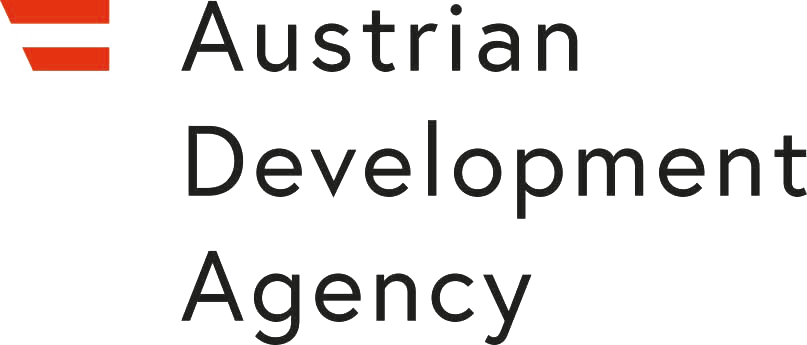
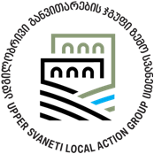
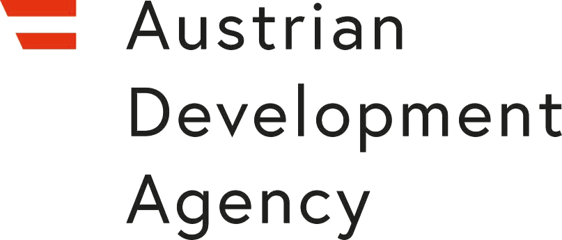
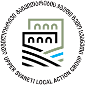

ჭკვიანი სოფელი საქართველო / Smart Village Georgia „თუ კაცი გონიერია, სოფელი ღონიერია.“
სტატუსი - არასამეწარმეო(არაკომერციული) იურიდიული პირი
ჩვენ დავიწყეთ კეთილი ნებით, გავერთიანდით, თვალი გავუსწორეთ გამოწვევებს და გავაცნობიერეთ ჩვენი როლი დროსა და სივრცეში, აქ და ახლა, ამ მომენტში. მერე გული გულს შეხვდა, გონი გონს და გაჩნდა კითხვა: “სოფლის შენებას რა უნდა?” პასუხად კი, ჭეშმარიტად, იშვა ჭკვიანი სოფელი საქართველო/Smart Village Georgia, ხოლო
გენიალური ქართული ხალხური ანდაზა “თუ კაცი გონიერია, სოფელი ღონიერია” ჩვენს ლაიტმოტივად გავრცელდა.
ჭკვიანი სოფელი საქართველო წარმოადგენს კერას, რომელიც ორიენტირებულია სოფლის მდგრად განვითარებასა და გაძლიერებაზე.
აღნიშნული ორგანიზაცია მოღვაწეობას იწყებს სვანეთში, კერძოდ მესტიის რაიონში, სოფელ ბეჩოში.
ორგანიზაცია ღიაა თანამშრომლობისთვის ყველა დაინტერესებულ პირთან და ინსტიტუციასთან, ღიაა სინერგიულობისათვის, ასევე მათთვის, ვისაც აქვს კეთილი ნება არსებულ გამოწვევებს უპოვოს ოპტიმალური გადაწყვეტა და შეიმუშაოს ინიციატივები.
ჩვენ გვჯერა, რომ ყველაფერი იწყება ნების გამოვლენით. ასე დაიწყო “ჭკვიანი სოფელი საქართველო” SMART VILLAGE GEORGIA
”თუ კაცი გონიერია, სოფელი ღონიერია”.
ჭკვიანი სოფელი საქართველო წარმოადგენს კერას, რომელიც ორიენტირებულია სოფლის განვითარებასა და გაძლიერებაზე, საზოგადოებისთვის შესაძლებლობების შექმნასა და რესურსების მობილიზებაზე, არსებული გამოწვევებისთვის საუკეთესო გადაწყვეტის პოვნასა და ინიციატივების შემუშავებაზე.
ჭკვიანი სოფელი საქართელოს გრძელვადიანი მიზნები და მიმართულებებია:
რეგიონისა და სოფლის მდგრადი განვითარების გეგმის შემუშავება და იმპლემენტაცია თანამედროვე წარმატებული პრაქტიკების გათვალისწინებით არსებულ კონიუნქტურასთან მიმართებით;
არსებული ინტელექტუალური რესურსების მობილიზება;
ქვეყნის, რეგიონისა და სოფლისთვის აქტუალური პრობლემების და გამოწვევების განსაზღვრა, ანალიზი და გადაჭრის გზების პოვნა;
ფორმალური და არაფორმალური განათლების ხელმისაწვდომობის უზრუნველყოფა და საგანმანათლებლო პლატფორმების შექმნა, ასევე, განათლების რეფორმის გატარების ხელშეწყობა, მათ შორის სკოლამდელი, სასკოლო, უმაღლესი და პროფესიული;
სოფლად მცხოვრები მოსახლეობის ჩართულობის უზრუნველყოფა დემოკრატიზაციის პროცესებში, დემოკრატიის ხარისხის გაზრდა და კანონის უზენაესობის დამკვიდრება;
ადგილობრივი საზოგადოების ინფორმირებულობისა და ჩართულობის ხელშეწყობა სახელმწიფოში მიმდინარე რეფორმებსა და პროცესებში;
ჯანსაღი ცხოვრების წესის დამკვიდრება და პოპულარიზაცია, სპორტის განვითარების ხელშეწყობა, რესურსების მოძიება ინფრასტრუქტურის შექმნასა და გაუმჯობესებისთვის;
გარემოს დაცვის პოლიტიკის ხელშეწყობა, ზრუნვა და საზოგადოების ინფორმირებულობის გაზრდა;
მედიაგანათლების, მედიაწიგნიერების და წიგნიერების დონის გაზრდის ხელშეწყობა;
ბუნებრივი მემკვიდრეობის, მატერიალური კულტურული მემკვიდრეობის, მათ შორის უძრავი და მოძრავი კულტურული მემკვიდრეობების, არამატერიალური კულტურული მემკვიდრეობის დაცვა, მათ შესახებ მოსახლეობის ინფორმირებულობის ამაღლება.
მთაში არსებული ტრადიციების კვლევა-ძიება, აღმოჩენა და გავრცელება;
სვანური ენის სწავლების და გავრცელების ხელშეწყობა;
ტურიზმის სექტორის განვითარების ხელშეწყობა;
მეწარმეობის, სტარტაპების, ინოვაციების ხელშეწყობა;
მცირე და საშუალო ბიზნესის სექტორის განვითარების ხელშეწყობა;
სოფლის მეურნეობის და მიწათმოქმედების სექტორის განვითარების ხელშეწყობა;
რეგიონისა და სოფლის განაშენიანების პროცესის მონიტორინგი და ანგარიშების მომზადება;
დეზინფორმაციის გავრცელებასთან ბრძოლა და პრევენციული მექანიზმების შემუშავება;
მოსახლეობაში არსებული კონფლიქტების დეესკალაცია, გადაჭრა, კონფლიქტის ალტერნატიული მოგვარების გზების გავრცელება, მედიაციის პლატფორმის ჩამოყალიბება, დიალოგისა და კონსესუსის, ასევე კონსოლიდაციის პროცესის ხელშეწყობა;
სამოქალაქო სექტორის განვითარების და გაძლიერების ხელშეწყობა;
სოფლებიდან მოსახლეობის მიგრაციის ანალიზი და კვლევა;
სოფლად მცხოვრები ახალგაზრდების პრობლემების ანალიზი და კვლევა, ახალგაზრდული პოლიტიკის შემუშავება; მათი პროფესიული განვითარების და დასაქმების პროცესის ხელშეწყობა;
სოციალური და ეკონომიკური პრობლემების, სიღარიბის დაძლევის ხელშეწყობა;
ჰუმანიტარული და საქველმოქმედო ღონისძებების დაგეგმვა;
გასართობი და შემეცნებითი პროექტების განხორციელება;
პიროვნების ღირსების, უფლებების და თავისუფლების დაცვა, საზოგადოების ინტერესების ადვოკატირება;
საარჩევნო გარემოს მონიტორინგის გზით არჩევნების პროცესის გაუმჯობესება და მოსახლეობის ინფორმირებულობის გაზრდა;
ადგილობრივი თვითმმართველობის, მიწათმესაკუთრეების, ფერმერების საქმიანობის განხორციელების ხელშეწყობა;
ევროპული და ევრო-ატლანტიკური ინტეგრაციის და შესაბამის ხელშეკრულებათა და ამ ხელშეკრულებებით გათვალისწინებული ვალდებულებათა შესრულების ხელშეწყობა, მათ შორის სოფლად მცხოვრები საზოგადოების ინფორმირებულობის გაზრდა ევროპული და ევრო-ატლანტიკური ინტეგრაციის პროცესის შესახებ;
ნებისმიერი საქმიანობა, რომელიც აკრძალული არ არის საქართველოს კანონმდებლობით.
მიზნების მისაღწევად „ჭკვიანი სოფელი საქართველო“:
ეწევა შემეცნებით და საგანმანათლებლო საქმიანობას;
ხელს უწყობს ქვეყანაში საერთაშორისო სტანდარტების შესაბამისი განათლების სისტემის ჩამოყალიბებას;
ეწევა სამეცნიერო, კვლევით, ანალიტიკურ და მთარგმნელობით საქმიანობას;
გეგმავს და ორგანიზებას უწევს ადგილობრივ და საერთაშორისო კონფერენციებს, ტრენინგებს, ფორუმებს, სემინარებს, საჯარო განხილვებს, ვებინარებს და ა.შ.
თამანშრომლობს, როგორც ადგილობრივ, ასევე საერთაშორისო ორგანიზაციებთან, პროფესიულ გაერთიანებებთან;
ხელს უწყობს ქვეყანაში ადგილობრივი თვითმმართველობის რეფორმის განხორციელებას და დემოკრატიული ინსტიტუტების გაძლიერებას;
ხელს უწყობს თემთა გაძლიერებას და განვითარებას, რისთვისაც ატარებს სხვადასხვა სახის ღონისძიებებს, პროექტებს და კვლევებს;
ხელს უწყობს ახალგაზრდების ჩართულობის დონის გაზრდას საზოგადოებრივ საქმიანობებში როგორც ლოკალურ, ისე რეგიონალურ დონეზე და მათი თვითშეგნების ამაღლებას დემოკრატიული ღირებულებებისადმი;
ქმნის ორგანიზაციის წარმომადგენლობით და სტრუქტურულ ერთეულებს საქართველოს მთელ ტერიტორიაზე;
ეწევა საარჩევნო პროცესების მონიტორინგს და კანონით დადგენილ ფორმით რეაგირებას ახდენს დარღვევებზე, ასევე ამზადებს ანგარიშებსა და რეკომენდაციებს;
ეწევა ადამიანის უფლებების პოპულარიზაციას, ადვოკატირებას და ხელს უწყობს ღირებულებების ჩამოყალიბებას საზოგადოებაში;
ეწევა სოფლის გაძლიერებასა და განვითარებისთვის დარგობრივი სფეროების საქმიანობის, პროგრამების და პროექტების განხორციელების ხელშეწყობას, მათ შესახებ სოფლად მცხოვრები მოსახლეობის ინფორმირებულობის გაზრდას;
უწევს სოფლად მცხოვრებ მოსახლეობას კონსულტაციას მათთვის მნიშვნელოვან და თემატურ საკითხებთან დაკავშირებით;
დადგენილი წესების შესაბამისად, იღებს და გასცემს გრანტებს;
გასცემს სტიპენდიებს;
ეწევა დამხმარე ხასიათის ეკონომიკურ საქმიანობას, რომელიც არ ცვლის მისი, როგორც არასამეწარმეო იურიდიული პირის ხასიათს;
ჭკვიანი სოფელი საქართველოს საავტორო პროექტის არტეფაქტის შესახებ
პროექტი ემსახურება ბეჩოს თემში მცხოვრებ მოსახლეობაში სვანური ენისა და
არამატერალური კულტურული მემკვიდრეობის მივიწყების ტენდენციის შეჩერებას.
აღნიშნული, საკვანძო პრობლემა, სტრატეგიის შემუშავებამდე, მუნიციპალიტეტში
არააქტუალური იყო, ვინაიდან არ ხდებოდა ამ პრობლემის პროაქტიური განხილვა,
როგორც თემის მოსახლეობაში, ასევე მუნიციპალური მთავრობის მხრიდან, რაც
ნულოვანი რეაგირებითაც აიხსნებოდა. გარდა ამისა, დღემდე, ბეჩოს თემის
მოსახლეობაში თავს იჩენს განათლების დაბალი დონე (სულ 802 მოსახლე, აქედან
უმაღლესი განათლება მიღებული აქვს 56-ს) აგრეთვე, ინფორმაციის ვაკუუმი საკვანძო
პრობლემის გარშემო, მეტიც ბეჩოს თემში მცხოვრები, სულ 134 ახალგაზრდა, მომავალი
თაობა, სიღრმისეულად არ იცნობენ სვანურ ენასა და არამატერალურ კულტურულ
მემკვიდრეობას; რაზეც ჭკვიანი სოფელი საქართველოს მიერ, 2020 წელს, იანვარ-
თებერვალში, ბეჩოს თემში, ახალგაზრდებთან ჩატარებული შეხვედრები და ბეჩოს
თემის მოსახლეობაში ჩატარებული ელექტრონული გამოკითხვა მეტყველებს, სადაც
გამოკითხვაში მონაწილეობა მიიღო ოცდაოთხმა აპლიკანტმა (მდედრობითი -13;
მამრობითი - 11; ახალგაზრდა - 12; შშმ პირი - 0). ამასთანავე, უნდა აღინიშნოს, რომ
ბეჩოს მოსახლეობას არ აქვს შესაბამისი პლატფორმა, რომელიც დაეხმარება მათ
საკვანძო პრობლემის გარშემო რეაგირებაში. უმოქმედობა კი ხელს შეუწყობს პროცესის
დაჩქარებას, ტენდენციის ტემპის გაზრდას. ამ ეტაპისთვის, ჩვენს სამიზნე ჯგუფს,
ბეჩოს თემის მოსახლეობას, არ ექნება სრულყოფილი ინფორმაცია თავიანთი
ტრადიციების შესახებ; შემდგომში კი სრულიად სვანეთის მოსახლეობას. გარდა ამისა,
უმოქმედობის გზით, საპირწონედ, ვერ მოხდება ბეჩოს თემის კონკურენტული
ტურისტული უპირატესობის კოეფიციენტის გაზრდა, რომელიც ჩვენი ორგანიზაციის
მიერ ამ პრობლემის მოგვარებაზე მუშაობის კვალდაკვალ, ინტერდისციპლინური გზით
ჩვენი პროექტის ერთ-ერთ ამოცანას წარმოადგენს.
საბედნიეროდ, მესტიის მუნიციპალიტეტის ადგილობრივი განვითარების
სტრატეგიაში (2.1.3) ნათლად ხაზგასმული, დეკლარირებულია, რომ სვანური ენისა და
არამატერიალური კულტურული მემკვიდრეობის საკითხი პოპულარიზებას საჭიროებს
და ამაზე მესტიის მუნიციპალიტეტის მოსახლეობა უკვე თანხმდება, რაც ჩვენი
შთაგონების და მოტივაციის წყაროა.
ჭკვიანი სოფელი საქართველოს პროექტის „არტეფაქტი“-ს მიზანია ბეჩოს
თემში მცხოვრებ მოსახლეობაში სვანური ენისა და არამატერალური
კულტურული მემკვიდრეობის მივიწყების ტენდენციის შეჩერება. აღნიშნული
მიზნის მისაღწევად განვსაზღვრეთ ორი ამოცანა: პირველი ამოცანაა, ბეჩოს
მოსახლეობაში სვანური ენისა და არამატერიალური კულტურული
მემკვიდრეობის შესახებ ცოდნის გაღრმავება; ხოლო მეორე ამოცანაა, ბეჩოს
მოსახლეობისთვის სვანური ენისა და არამატერიალური კულტურული
მემკვიდრეობის ერთ სივრცეში განთავსებით, ბეჩოს მუნიციპალიტეტში, ახალი
ტურისტული პროდუქტის შექმნა. აღნიშნულის მისაღწევად ბეჩოს თემში,
პროექტის დაწყებიდან თორმეტი თვის განმავლობაში ჭკვიანი სოფელი
საქართველო განახორციელებს ამოცანების მიხედვით დაგეგმილ ქმედებებს.
QR ბანერების გამოყენებით, ბეჩოს თემში არსებულ ტურისტულ მარშრუტებზე ნებისმიერ გამვლელს, როგორც ტურისტს, ასევე ადგილობრივს, საკუთარი სმარტფონის დახმარებით შეეძლება მიიღოს ინფორმაცია მრავალთაგან ერთ-ერთ სვანურ თქმულებაზე, ლეგენდაზე, მოუსმინოს ფოლკლორს, გაეცნოს სვანურ სიტყვას. რაც მთავარია ინტერაქტიური ბანერი მისცემს ვიზიტორს შესაძლებლობას აღნიშნული ინფორმაცია მიიღოს სამ ენაზე: სვანურ, ქართულ და ინგლისურ ენებზე. ბანერების განთავსება დამოკიდებული იქნება თქმულებების შინაარსზეც. თუ კონკრეტულ ტერიტორიაზე, სახელდობრ მდინარე წრდნილდთან ჩაივლით შეგხვდებათ ინტერაქტიური ბანერი, რომელის QR კოდის დასკანერების შემთხვევაში გაგაცნობთ ლეგენდას მდინარე წრდნილდის შესახებ.
 


